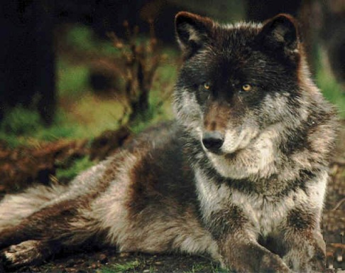

Lobo del este
Descripción
A pesar de que muchas personas lo confunden con el lobo gris y el lobo rojo, el lobo del este es una especie distinta de lobos. El lobo del este es de tamaño pequeño y mediano y posee una piel de color marrón claro y en algunas ocasiones roja. Estos lobos son muy parecidos a los perros.
También tienen pelos largos en la piel, normalmente de color negro. Cuando un lobo del este crece, los pelos negros se aun más. A menudo, estos lobos se confunden con los coyotes, debido a su coloración y anatomía.
Distribución
Muchos de estos animales se encuentran en todo Canadá, así como en los Estados Unidos alrededor del río Mississippi. Hoy en día muchos de ellos viven refugiados en Carolina del Norte. Este es el resultado de un plan de reintroducción que ha tenido, hasta ahora, mucho éxito con este tipo de lobos, así como con otros.
La localización más común es en Canadá, aquí es donde se encuentra el lobo del este, alrededor del Parque Provincial de Algonquin en Ontario. Estos animales tienen áreas de distribución muy grandes. Se cree que estos lobos siguen la migración del venado cola blanca para asegurarse de que tienen comida, lo hacen sobretodo en los meses de invierno.
Comportamiento
Estos lobos son muy dependientes de los aspectos sociales de su manada, son muy leales entre sí y harán todo lo posible para mantener a otras manadas fuera de sus territorios. Es por eso que frecuentemente se oyen aullar. Estos animales son más activos durante la noche pero también pueden verse durante el día.
Dieta/Alimentación
Este lobo tiene una dieta muy diversa. A veces sale a cazar por su cuenta, pero la mayor parte del tiempo caza con su manada. La dieta fundamental del lobo del este la conforman los roedores, castores y las ratas almizcleras, también cazan ciervos y alces. En algunos casos han sido capaces de matar con éxito un oso negro.
Los lobos jóvenes se alimentan con comida regurgitada, al igual que en otras especies de lobos. Cuando el grupo sale de cacería, los cachorros se quedan en la madriguera manteniéndose a salvo. Si los lobos jóvenes salen a cazar por su cuenta, existe la posibilidad que sean asesinados por otros animales.
Reproducción
El macho alfa y la hembra beta se aparean en febrero, y luego de dos meses nacen los cachorritos. La madre se mantendrá en la cueva y no saldrá hasta que sus cachorros tengan al menos dos meses de edad, ella puede tener de 4 a 8 cachorros en cada camada.
Se sabe que el lobo del este se ha apareado con diferentes tipos de coyotes que viven en sus áreas. Esto es una preocupación, ya que sin duda, puede afectar la genética en esta especie de lobos. Este tipo de comportamiento resulta interesante debido al hecho de que la mayoría de las especies de lobos son agresivas con otros animales.
Conservación
Actualmente se llevan a cabo esfuerzos de conservación para cuidar y mantener a esta especie de lobos, esta actividad se realiza por la asociación comúnmente conocida como CREW, que existe para restaurarlos, y su objetivo fundamental es aumentar el número de lobos del este que residen en los Estados Unidos.